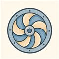
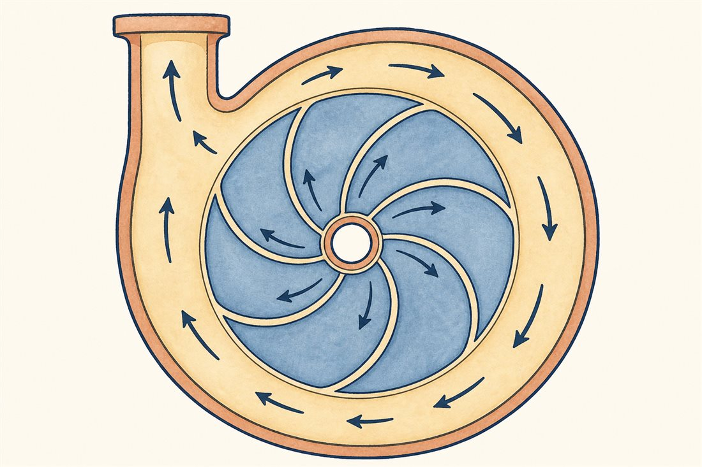
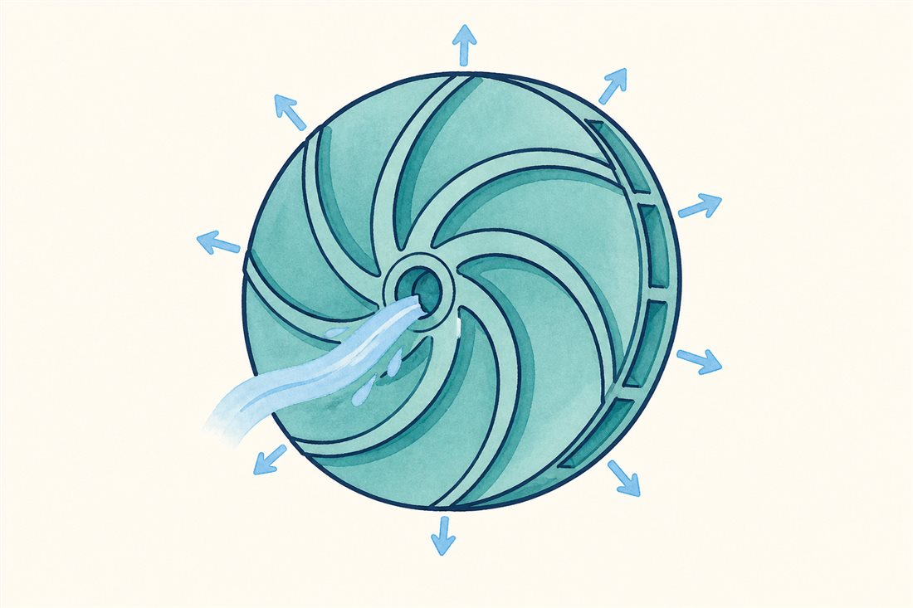
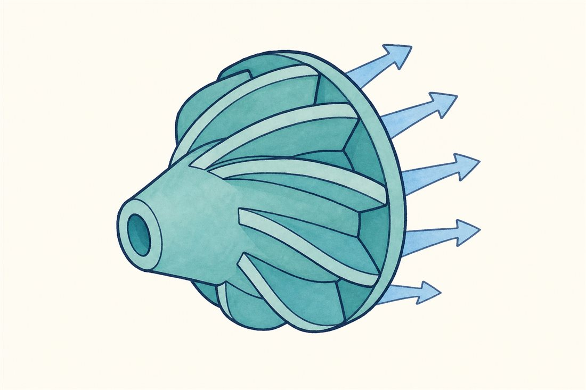
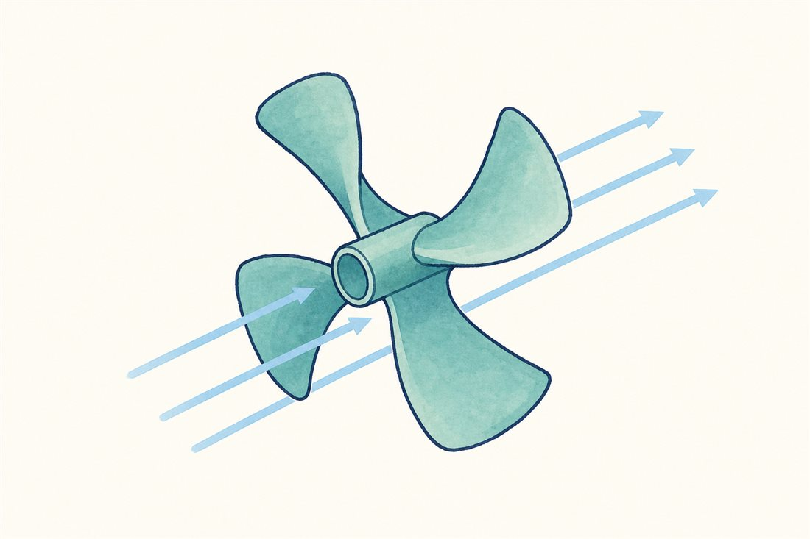

第3巻 だい3わ ── 円盤の章とばす円盤
先発隊が泡を飼いならしながら持ち上げた液を、いよいよ本隊が受け取ります。インペラ——毎分数万回転で回る、羽根の生えた円盤。液は円盤の中心（目）から入り、羽根に乗って外周へ振り飛ばされるあいだに回転の勢いを受け取り、それが下流で圧力に変わる。第2巻の圧縮機が10数段の行列でこつこつ登った坂を、液体相手だからこそ、ほぼ一撃で駆け上がります。

じつは羽根車には家族がいます。回転数N・流量Q・揚程Hの組み合わせ——比速度 Ns=N√Q/H3/4——で、最適な体つきが決まるのです。切り替えてみてください。



よりみちオイラーの式 — 渡しているのは「回転の勢い」
ポンプが液に渡す理想仕事は、入口と出口の角運動量の差——この1行に尽きます。実務の主なレバーは周速U₂（大径か高回転か）と出口旋回Cu2（羽根出口角とすべりが決める）で、入口の予旋回 U₁Cu1 も設計の道具です。ロケットポンプが数万rpmに賭けるのは、径を小さく軽く保ったまま U₂ を稼ぐため。第2巻06話の圧縮機と同じ式が、液体では1段で桁違いに働けます——液体は密度が大きいので同じ仕事が大きな圧力上昇になり、圧縮性の制約（マッハ数・温度上昇）もないからです。ただし液体でも拡散のしすぎは剥離を招く——段負荷に限界があること自体は、翼列の宿命として共通です。
よりみち液体水素で、27kmぶんの揚程
LE-9の燃料ポンプの吐出は19.1MPa。ポンプ屋の通貨「揚程」に直すと、液体水素（密度約71kg/m³）では19.1×10⁶ ÷ (71×9.8) ≒ 27,000m——エベレスト3つ分、成層圏に届く高さの液体水素の柱を支える圧力です（吐出圧をそのまま換算した目安で、入口圧のぶん実際の揚程上昇はすこし小さくなります）。軽い液体ほど同じ圧力でも揚程が莫大になる——液体水素ポンプが世界のポンプの中でも別格の回転数を要求される理由が、この換算ひとつに入っています。
 流体屋のためのノート
流体屋のためのノート
形式選定の座標は比速度Ns——低Nsなら遠心（大揚程・小流量）、高Nsなら軸流（大流量・小揚程）、あいだが斜流。ページ末尾の写真はまさにこの家族写真です。実物の設計では、無限枚数羽根の理想出口旋回をすべり係数で実際の値に割り引いてから（羽根出口で液が羽根ほど回りきらない分）、摩擦・二次流れ・チップリーク（第2巻06話の言葉がそのまま使えます）の損失を別途差し引く。製造側の潮流としては、IHIがLE-9のコスト技術としてオープン形インペラ（シュラウドなし）やブリスク化を挙げています——空力・構造・製造の三者面談は、ここでも日常です。次話は、この円盤を回す動力の話。
{kind=link}
・C. Brennen, Hydrodynamics of Pumps（オイラー式・比速度）
・IHI技報 Vol.58 No.2（LE-9 FTP 吐出19.1MPa・オープンインペラ等のコスト技術）
・液体水素密度 約71kg/m³: Wikipedia "Liquid hydrogen"（沸点近傍）